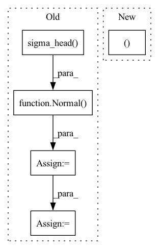

Pattern ID :7692

Before Change
a = t.relu(self.fc1(state))
a = t.relu(self.fc2(a))
a_mu = t.tanh(self.mu_head(a)) * self.action_range
a_sigma = softplus(self.sigma_head(a))
a_dist = Normal(a_mu, a_sigma)
a = action if action is not None else a_dist.sample()
a_entropy = a_dist.entropy()
a_log_prob = a_dist.log_prob(a)
return a, a_log_prob, a_entropy
After Change
act = (action if action is not None else dist.sample())
act_entropy = dist.entropy()
act_log_prob = dist.log_prob(act)
return act, act_log_prob, act_entropy
class Critic(nn.Module):
def __init__(self, state_dim):
In pattern: SUPERPATTERN
Frequency: 3
Non-data size: 5
Instances
Fragment ID: 25553925
Project Name: iffix/machin
Commit Name: 89695fab2bc63909df0f8994bac2700f121a9b62
Time: 2020-06-16
Author: hanhanmumuqq@163.com
File Name: test/frame/algorithms/test_ppo.py
M Class Name: Actor
N Class Name: Actor
M Method Name: forward(3)
N Method Name: forward(3)
M Parent Class: nn.Module
N Parent Class: nn.Module
M File Name: test/frame/algorithms/test_ppo.py
N File Name: test/frame/algorithms/test_ppo.py
M Start Line: 30
M End Line: 37
N Start Line: 27
N End Line: 33
'>
Before Change
a = F.relu(self.fc2(a))
mu = self.mu_head(a)
mu = torch.clip(mu, MEAN_MIN, MEAN_MAX)
log_sigma = self.sigma_head(a)
log_sigma = torch.clip(log_sigma, LOG_STD_MIN, LOG_STD_MAX)
sigma = torch.exp(log_sigma)
a_distribution = Normal(mu, sigma)
action = a_distribution.rsample()
logp_pi = a_distribution.log_prob(action).sum(axis=-1)
logp_pi -= (2 * (np.log(2) - action - F.softplus(-2 * action))).sum(axis=1)
logp_pi = torch.unsqueeze(logp_pi, dim=1)
action = self.max_action * torch.tanh(action)
mu = torch.tanh(mu) * self.max_action
return action, logp_pi, mu
After Change
a_dist, a_tanh_mode = self._get_outputs(state)
action = a_dist.rsample()
logp_pi = a_dist.log_prob(action).sum(axis=-1)
return action, logp_pi, a_tanh_mode
def get_log_density(self, state, action):
a_dist, _ = self._get_outputs(state)
action_clip = torch.clip(action, -1. + EPS, 1. - EPS)
'>
Fragment ID: 25553985
Project Name: ryanxhr/dwbc
Commit Name: b3791e408af7125fde12cda1cdeaefbaa400aacc
Time: 2022-06-30
Author: xuhaoran8@jd.com
File Name: algos/DWBC.py
M Class Name: Actor
N Class Name: Actor
M Method Name: forward(2)
N Method Name: forward(2)
M Parent Class: nn.Module
N Parent Class: nn.Module
M File Name: algos/DWBC.py
N File Name: algos/DWBC.py
M Start Line: 35
M End Line: 52
N Start Line: 51
N End Line: 54
'>
Before Change
a = F.relu(self.fc2(a))
mu = self.mu_head(a)
mu = torch.clip(mu, MEAN_MIN, MEAN_MAX)
log_sigma = self.sigma_head(a)
log_sigma = torch.clip(log_sigma, LOG_STD_MIN, LOG_STD_MAX)
sigma = torch.exp(log_sigma)
a_distribution = Normal(mu, sigma)
action_clip = torch.clip(action, -1. + EPS, 1. - EPS)
raw_action = torch.atanh(action_clip)
// logp_action = a_distribution.log_prob(raw_action).sum(axis=-1)
// logp_action -= (2 * (np.log(2) - raw_action - F.softplus(-2 * raw_action))).sum(axis=1)
// logp_action = torch.unsqueeze(logp_action, dim=1)
logp_action = a_distribution.log_prob(raw_action)
logp_action -= (2 * (np.log(2) - raw_action - F.softplus(-2 * raw_action)))
return logp_action
After Change
return action, logp_pi, a_tanh_mode
def get_log_density(self, state, action):
a_dist, _ = self._get_outputs(state)
action_clip = torch.clip(action, -1. + EPS, 1. - EPS)
logp_action = a_dist.log_prob(action_clip)
return logp_action
'>
Fragment ID: 25553928
Project Name: ryanxhr/dwbc
Commit Name: b3791e408af7125fde12cda1cdeaefbaa400aacc
Time: 2022-06-30
Author: xuhaoran8@jd.com
File Name: algos/DWBC.py
M Class Name: Actor
N Class Name: Actor
M Method Name: get_log_density(3)
N Method Name: get_log_density(3)
M Parent Class: nn.Module
N Parent Class: nn.Module
M File Name: algos/DWBC.py
N File Name: algos/DWBC.py
M Start Line: 55
M End Line: 71
N Start Line: 57
N End Line: 59